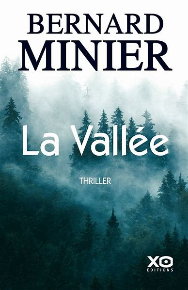

- Auteur : Bernard Minier
- Genre : Thriller
- Thèmes : Enquête, secrets, isolement
- Date de sortie : 2020
La Vallée
« La Vallée » est le sixième roman de la série policière de Bernard Minier mettant en scène le commandant Martin Servaz. Publié en 2020, ce thriller plonge le lecteur dans une enquête complexe au cœur des Pyrénées.
Suspendu de ses fonctions à la SRPJ de Toulouse, Servaz reçoit un appel nocturne de Marianne, son ancienne compagne disparue depuis huit ans. Elle prétend s'être échappée et se cacher près de l'abbaye des Hautsfroids, dans une vallée isolée. Servaz se rend immédiatement à Aigues-Vives, le village voisin, pour la retrouver.
Parallèlement, deux meurtres atroces secouent la région. Malgré sa suspension, Servaz s'associe à l'enquête dirigée par la gendarmerie locale, notamment le capitaine Éloi Enguehard et la capitaine Irène Ziegler. Un éboulement coupe la seule route d'accès à Aigues-Vives, isolant davantage la communauté.
L'enquête révèle des secrets enfouis, des tensions sociales exacerbées et une population en proie à la peur et à la méfiance envers les autorités. Les thèmes de l'isolement, de la dualité entre le bien et le mal, et de la solidarité face à l'adversité sont explorés en profondeur.
« La Vallée » est salué pour son suspense maîtrisé, ses personnages complexes et sa réflexion sur la nature humaine. Ce roman confirme le talent de Bernard Minier dans le domaine du thriller contemporain.